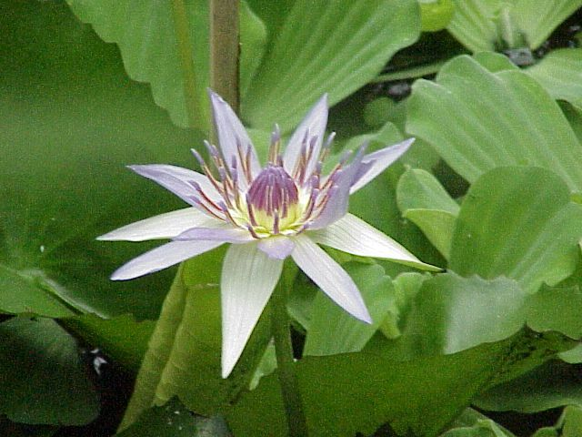

¿Qué es cada nivel?
Orden
Agrupa familias emparentadas. Es el nivel que abres en el catálogo para ver las familias y géneros registrados en México.
Familia
Reúne géneros con características similares. Algunas familias aparecen directamente cuando no hay géneros listados en el atlas.
Género
Conjunto de especies muy relacionadas entre sí. En las tarjetas verás el nombre del género y, cuando aplique, su familia.
Ejemplo: cómo usar la plataforma
1. Abre un clado → 2. Elige un orden → 3. Consulta las tarjetas de géneros (o familias).

NymphaealesBrasenia
Género: Brasenia
Familia: Cabombaceae
Nymphaea
Género: Nymphaea
Familia: Nymphaeaceae
Explora el catálogo
Busca o abre un clado para consultar la clasificación completa de angiospermas de México.
Referencias
Martínez Gordillo, M., Fragoso Martínez, I., Valencia Ávalos, S., Cruz Durán, R., Cristians Niizawa, S., Elías González, M., Ginez Vázquez, L., & Jiménez Ramírez, J.
(2014)
Atlas de familias de angiospermas de México
Universidad Nacional Autónoma de México, Facultad de Ciencias.